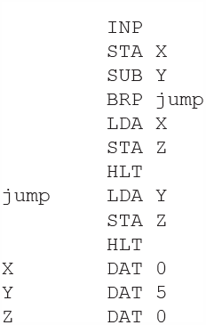
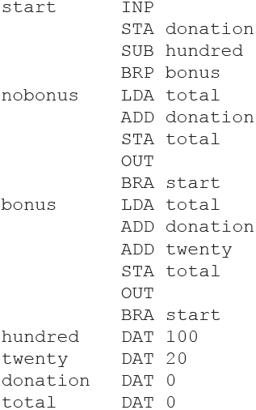

Types of programming languages
| High-Level | Low-Level |
|---|---|
|
|
One line of Python code results in many lines of machine code due to the steps necessary to perform the operation in hardware.
Python code:
a = 5 + 10
Resulting Assembly Code:
1. MOV R1, #5 ; Move constant 5 into register R1 2. MOV R2, #10 ; Move constant 10 into register R2 3. ADD R3, R1, R2 ; Add R1 and R2, store result in R3 4. MOV [a], R3 ; Store the result from R3 into the memory location of a
How an Assembler Works
- Reserves storage for instructions and data
- Replaces mnemonic opcodes with machine codes
- Replaces symbolic addresses with numeric addresses
- Creates a symbol table to map symbolic labels to numeric memory addresses
- Checks syntax
- Provides error diagnostics
Example Assembly Code (using symbols):
INP ; Read input into the accumulator ADD DATA ; Add the value stored at DATA STA DATA ; Store the result back in DATA HLT ; Halt execution DATA DAT 10 ; Store initial value 10
After Assembly (symbols replaced with addresses):
INP ADD 00010000 ; Add the value stored at address 00010000 STA 00010000 ; Store the result back at address 00010000 HLT
Symbol Table:
| Symbol | Address |
|---|---|
| DATA | 00010000 |
| Compilers | Interpreters |
|---|---|
| Translate the entire source code in one go into machine code and create an executable file (exe) | Translate and execute source code line by line |
| Object code results in faster processing | Slower processing |
| Reports all errors at the end of compilation | Reports errors as they occur |
| Whole program must be loaded into memory | Memory is only needed as each line of code is run |
| Used at the end of development (ready for shipping) | Used during development (aids debugging) |
| Source code is hidden, protecting it from being copied | Source code must be accessible |
| Machine dependent – only runs on computers with a specific architecture | Platform independent – requires a suitable interpreter |
High-Level Languages and Intermediate Code
Intermediate code is a type of code that sits between high-level source code (such as Python, Java, or C#) and machine code (binary code executed by the CPU). It is not specific to any machine, but it is more structured and lower-level than the original source code.

An interpreter or virtual machine handles machine-specific execution.
- Portable – can be used on any machine (write once, run anywhere)
- The same intermediate code can run on different systems using the appropriate interpreter or virtual machine
- Intermediate code is machine-independent
- Protects the source code from being copied
Execution Process
Source Code → Compiled → Intermediate Code → Runs in Virtual Machine
Opcode and Operand
An instruction is split into an opcode and an operand.
- Opcode specifies which operation to carry out
- Operand specifies the data that needs to be acted on
Common LMC Mnemonics
| Mnemonic | Instruction | Alternative Mnemonics Accepted |
|---|---|---|
| ADD | Add | |
| SUB | Subtract | |
| STA | Store | STO |
| LDA | Load | LOAD |
| BRA | Branch always | BR |
| BRZ | Branch if zero | BZ |
| BRP | Branch if positive | BP |
| INP | Input | IN, INPUT |
| OUT | Output | |
| HLT | End program | COB, END |
| DAT | Data location |
Example: Add Two Numbers (LMC)
INP // Input the first number STA 90 // Store the first number in memory location 90 INP // Input the second number ADD 90 // Add the number in memory location 90 to the accumulator OUT // Output the result HLT // End the program DAT // Memory location 90 for storing data
Addressing modes
Immediate Addressing (#)
# before a number means to use the value itself, not the address.
Example: ADD #4 means “Load the value 4 directly into the accumulator.”
Direct Addressing (default, no symbol)
The operand refers directly to a memory address.
Example: LDA 10 means “Load the value at memory address 10.”
Indirect Addressing (&)
& means the operand is the address of a memory location that contains another address.
Example: LDA &7 means:
- Go to memory address 7, read the number there (15).
- Then go to memory address 15 and load that value.
0 LDA &7
1 ADD #4
2 OUT
3 HLT
4 6
5 2
6 10
7 15
8 16
9 17
Indexed addressing
Indexed addressing uses a base address + the value in an index register to compute the final memory address. This allows for array-like access or looping through data.
For example:
- The instruction is
LDA 20,X - The index register X contains the value
0
Then: The LMC loads the value from address 20 + 0 = 20, so it accesses memory address 20.
After the operation, the index register X increments by 1.
Stage 1: Lexical Analysis
- Lexer scans the source code letter by letter
- Words (lexemes) are identified when there is whitespace, an operator symbol, or a special symbol
- Comments are stripped out and unnecessary spaces are removed
- Each lexeme is checked to see if it is a valid token
- The lexeme is stored along with its token and added to the symbol table
Example:
[keyword: if][Separator: (][Identifier: x][Operator: >]
All keywords, constants, and identifiers (e.g. variable names) used in the source code are replaced by tokens.
Token Classes
| Token Class | Example |
|---|---|
| Identifier | Any function or variable name |
| Keyword | As, If, Else, EndIf, Function, EndFunction, Return |
| Separator | ( ) , & |
| Operator | + - * / % ^ DIV MOD < > = |
| Literal | "Hello world" |
| Number | -4, 0, 3.4 |
| Quote | " |
| Boolean | True, False |
| Datatype | Integer, Decimal, String, Boolean |
The Symbol Table
The symbol table plays a central role in the compilation process. It contains an entry for every keyword (reserved word) and identifier in the program.
The table will show:
- Identifier or keyword
- Kind of item (variable, array, procedure, keyword, etc.)
- Type of item (integer, real, char, etc.) – added during the syntax stage
It will also store:
- Run-time address of the item, or its value if it is a constant
- Pointer to accessing information (e.g. array bounds, or procedure parameter information)
Example Source Code
Function checkScore(score As Integer)
If score > 75 Then
Return "Pass"
Else
Return "Fail"
EndIf
EndFunction
Example Symbol Table


Note: Data types and additional details are added during the syntax analysis stage.
Stage 2: Syntax Analysis
- This stage analyses the syntax of statements to ensure they conform to the grammar rules of the programming language
- The purpose of syntax analysis (parsing) is to check that there is a valid sequence of tokens
- Tokens represent symbols, keywords, identifiers, literals, etc.
Process
- Token stream is sent to the syntax analyser
- The analyser checks that the token stream follows the grammar rules of the language
- Stacks are used to check structures such as correctly paired brackets
- If errors are found, they are reported
- Error diagnostics are produced
- An abstract syntax tree (AST) is created
- Identifiers in the symbol table are updated (e.g. data type, scope)

Stage 3: Code Generation and Optimisation
This is the final phase of compilation and produces object code.
- Makes the program run faster / code more efficient
- Makes the program use fewer resources / less memory
Disadvantages of Code Optimisation
- Increases compilation time, sometimes considerably
- May sometimes produce unexpected results
Examples of Optimisation
- Removes variables and subprograms that are not used
- Removes lines of code that are never accessed
What is a Linker?
- Combines/links code and programs to files or software libraries
- Forms a single executable file
- Static linkers combine code and libraries into one file
- Dynamic linkers add addresses to external libraries
What is a Loader?
- Part of the operating system
- Loads an executable file into memory
- Loads the program from secondary storage
- Loads the required software libraries
Libraries
Library programs are ready-compiled programs grouped into software libraries,
which can be loaded and run when required. In Windows, these often have a
.dll extension.
Most compiled languages have their own libraries of pre-written functions which can be invoked in a defined manner from within the user's program.
Advantages of Library Routines
- Tested and error-free
- Save programmer time by avoiding re-inventing the wheel
- Provide ready-made solutions for common tasks
Check Your Understanding – Questions
Topic A: Opcodes & Mnemonics
1. Low-level languages have features which include opcodes and mnemonics. (i) Explain the term opcode.[0/2]
- Part of an instruction or code
- Indicates what operation the processor should carry out
2. Low-level languages have features which include opcodes and mnemonics. (ii) Explain the term mnemonic, giving an example.[0/3]
- A short sequence of letters representing an instruction
- Easy for humans to remember
- Example: ADD for addition
Topic B: Assembly, High-Level Languages & Translators
3. What is the difference between Assembly language and a High-Level Language (HLL)?[0/4]
- Assembly uses mnemonics; HLL uses English-like statements
- Assembly uses an assembler; HLL uses a compiler or interpreter
- Assembly is one-to-one with machine code; HLL is one-to-many
- Assembly is machine dependent; HLL is portable
4(a). A programmer creates this function using a high-level language. Before the code can be executed, a translator must be used. State the purpose of a translator.[0/1]
- To convert high-level or assembly code into machine code
4(b). A programmer creates this function using a high-level language. Before the code can be executed, a translator must be used. Explain two differences between a compiler and an interpreter.[0/4]
- Compiler translates the whole program; interpreter translates line by line
- Compiler produces an executable; interpreter does not
- Compiler reports errors at the end; interpreter reports errors immediately
- Compiled programs hide source code; interpreted programs expose it
Topic C: Little Man Computer (LMC)
Example
LMC — Example 2: Find the smallest of three numbers
This program inputs three numbers and determines the smallest of the three, outputting the result.
INP // Input the first number
STA 91 // Store the first number in memory location 91
INP // Input the second number
STA 92 // Store the second number in memory location 92
INP // Input the third number
STA 93 // Store the third number in memory location 93
LDA 91 // Load the first number
SUB 92 // Subtract the second number
BRP CHECK_THIRD_FROM_FIRST // If result is positive, then first number > second number
LDA 92 // Load the second number
SUB 93 // Subtract the third number
BRP OUTPUT_SECOND // If result is positive, then second number > third number
LDA 93
OUT // Output the third number
HLT
CHECK_THIRD_FROM_FIRST:
LDA 91
SUB 93
BRP OUTPUT_FIRST
LDA 93
OUT
HLT
OUTPUT_FIRST:
LDA 91
OUT
HLT
OUTPUT_SECOND:
LDA 92
OUT
HLT
DAT // Memory locations for data storage
DAT
DAT5(a). Fig. 3 shows assembly code written using the LMC instruction set. Indicate the programming construct that is not used in Fig. 3. [0/1]
- Iteration
5(b). Fig. 3 shows assembly code written using the LMC instruction set. When the program is run, 7 is input by the user. State the value that will be in the memory location Z when the program has run with this input.[0/1]
- 5
5(c). Fig. 3 shows assembly code written using the LMC instruction set. Write an equivalent version of the LMC assembly code shown in Fig. 3 for a procedural programming language. You should write your code using pseudocode or program code.[0/4]
X = input()
Y = 5
if X >= Y then
Z = Y
else
Z = X
endif
6(b). Fig. 1 shows assembly code written using the Little Man Computer (LMC). The program calculates and outputs the total amount that is donated to a charity in any particular day. Depending on the amount, an additional bonus may be added to each amount donated. The program shown in Fig. 1 is run once using three different inputs. Therefore, while the program is running once, it will output the updated total three times. Give the total values that are output when the values 10, 50 and 120 are input into this program.[0/3]
- 10 → 10
- 50 → 60
- 120 → 200
6(ii).Write LMC code that will reset the value of the memory location labelled total to zero and then stop the program.[0/3]
- Establishes a zero value (by use of DAT / SUB)
- Stores a zero value into total
- Program stops
LDA ZERO
STA total
HLT
ZERO DAT 0
total DAT
Question
The pseudocode algorithm here will take in two numbers from the user, multiply them together using addition and output the result.
For example, 4 multiplied by 3 would be
4 + 4 + 4 = 12.
You can assume the function input takes in a value as an integer.
numA = input("Enter first number")
numB = input("Enter second number")
answer = 0
while (numB > 0)
answer = answer + numA
contribute = numB - 1
endwhile
print(answer)Write this algorithm in assembly language using the Little Man Computer (LMC) instruction set. [6]
INP
STA NUMA
INP
STA NUMB
LOOP LDA NUMB
BRZ END
SUB ONE
STA NUMB
LDA ANSWER
ADD NUMA
STA ANSWER
BRA LOOP
END LDA ANSWER
OUT
HLT
ANSWER DAT 0
NUMA DAT 0
NUMB DAT 0
ONE DAT 1Topic D: Addressing Modes
7(a). In Orla's LMC code, she used direct memory addressing. Give three other modes of memory addressing.[0/3]
- Immediate
- Indirect
- Indexed
7(b). A Little Man Computer (LMC) assembly language program is stored in memory as shown in Fig. 3.1. In this variant of LMC the symbols & and # are used to denote different modes of addressing. Given that the output is 17, state the addressing mode represented by each symbol: (i) & (ii) #.[0/2]

- & → Immediate addressing
- # → Indirect addressing
8. In assembly language, different modes of addressing memory can be used. Discuss the different modes used. You should include: how the operand value is determined; what an operand of 27 would refer to in that mode; the reasons for requiring multiple modes of addressing.[0/12]
- Immediate: operand is the value itself
- Direct: operand is the memory address
- Indirect: operand points to another address
- Indexed: operand + index register used
- Multiple modes improve flexibility and efficiency
Topic E: Compilation Process
9(a). The following source code is written in Python. It contains errors. Using lines of code from the program to illustrate your answer, state two things that would be done during lexical analysis.[0/2]

- Removes comments
- Removes unnecessary whitespace
9(b). The following source code is written in Python. It contains errors. Using lines of code from the program to illustrate your answer, state two things that would be done during syntax analysis.[0/2]
- Variable used before initialisation
- Misspelt keyword
10. The process of compilation involves a number of stages. Name the stage at which each of the following would be detected: (a) an illegal identifier; (b) an arithmetic operator is applied to an operand of the data type Boolean; (c) an operand is omitted from an arithmetic expression.[0/3]
- Illegal identifier → Lexical analysis
- Boolean arithmetic → Syntax analysis
- Missing operand → Syntax analysis
11. Describe what happens during syntax analysis when code is compiled.[0/5]
Mark Scheme Points
2 Marks from this section
- Statements / tokens are checked…
- … against the rules / grammar of the language
- valid example given
3 Marks from this section
- Errors reported as a list
- Error diagnostics given
- Detail added to symbol table…
- …eg data type / scope / address
- Receives output from lexical analysis / passes code to code generation
12(b). Describe the purpose of code optimisation.[0/2]
- Makes programs run faster
- Reduces memory and resource usage
Topic F: Linkers, Loaders & Libraries
13(a). What is a linker? (From: “What is a linker and what is a loader?”)[0/2]
1 mark per bullet (maximum 2)
- Combines / links code / programs to files / software libraries…
- …to form a single executable file
- Static linkers combine code and libraries into one file
- Dynamic linkers link – add addresses to libraries
13(b). What is a loader? (From: “What is a linker and what is a loader?”)[0/2]
1 mark per bullet (maximum 2)
- It is part of the operating system
- Loads an executable file (into memory)…
- …from secondary storage
- Loads the required software libraries
13(c). State three benefits of using library routines when a program is written.[0/3]
- Relatively error free / has already been tested
- Ready to use / saves time / already been written
- Used multiple times / common tasks / reduces repeated code
- Programmer expertise